알림 권한 온보딩부터 앱 설정 3종 스위치, 전역 알림함, CMS 알림 운영까지 — 실제 배포본 화면 캡처 기반
스플래시 직후 앱 자체 프리퍼미션 화면이 먼저 뜬다. 혜택(적립·등급 전환·만료 임박 D-30/D-7·이벤트 소식)을 설명한 뒤 '다음'을 누르면 그때 iOS 시스템 권한 팝업을 노출한다. '나중에 설정하기'로 건너뛸 수 있으며, 허용/거부와 무관하게 닉네임 설정으로 진행된다.
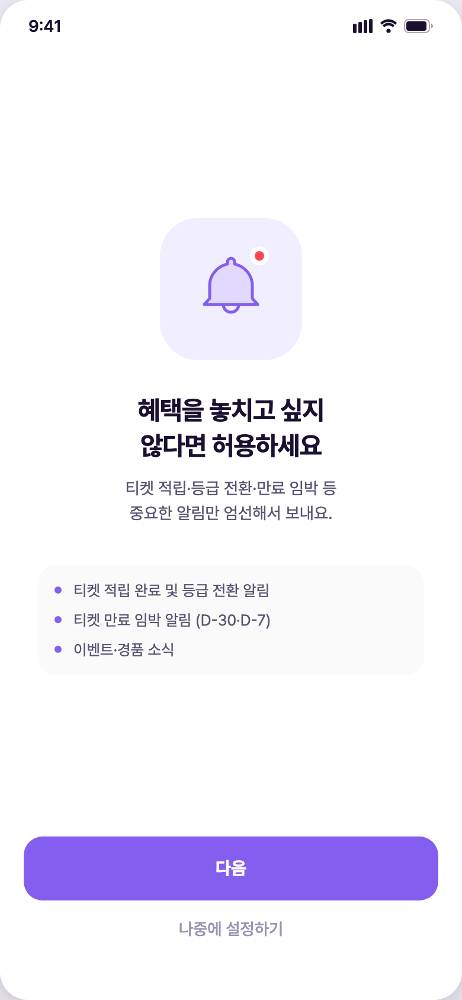
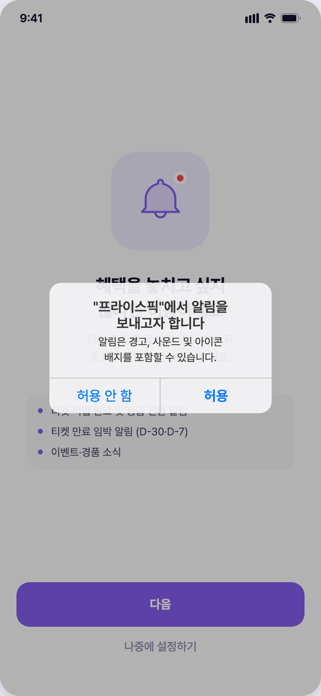
알림함(벨)과 설정(톱니)은 홈 헤더와 마이 탭 상단 두 곳에 상시 노출된다. 리워드(교환소) 화면 상단에도 설정 톱니가 있다. 홈 벨 아이콘의 빨간 점은 현재 데모에서 정적 표시다(미읽음 수와 무관 — 하단 미결 참조).
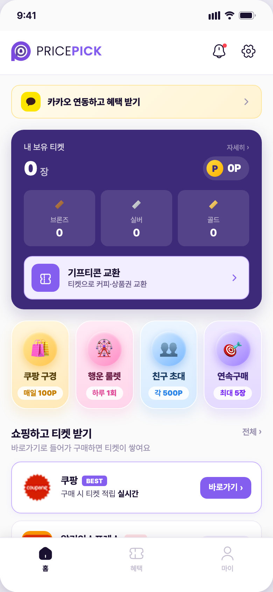
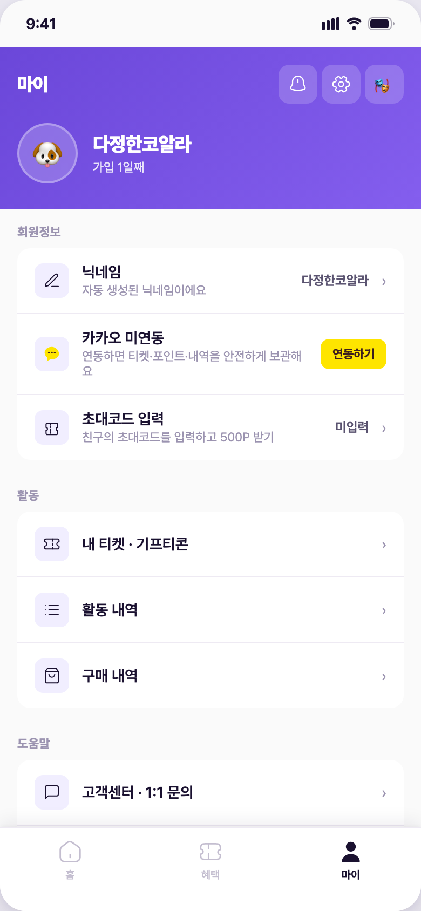
알림함은 별도 알림 컬렉션 없이 사용자의 실제 이벤트 로그 4종(구매 포스트백 · 기프티콘 교환 · 친구초대 · 포인트 적립)을 통합해 시간순으로 렌더한다. 날짜 버킷(오늘/어제/이번 주/이전)으로 묶이며, 우측 상단에 '모두 읽음' 버튼이 있다. 아래 두 상태 모두 실제 계정으로 만든 화면이다.
가입 직후 활동이 없으면 빈 상태 안내가 노출된다. 필터 탭 뱃지는 전부 0.
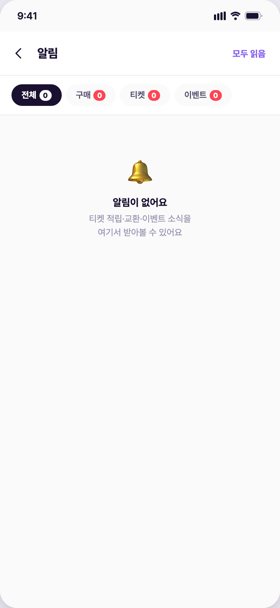
구매 시뮬(67,000원) + 출석체크(+100P) + 룰렛 당첨(+200P)을 실제 수행한 직후의 알림함.
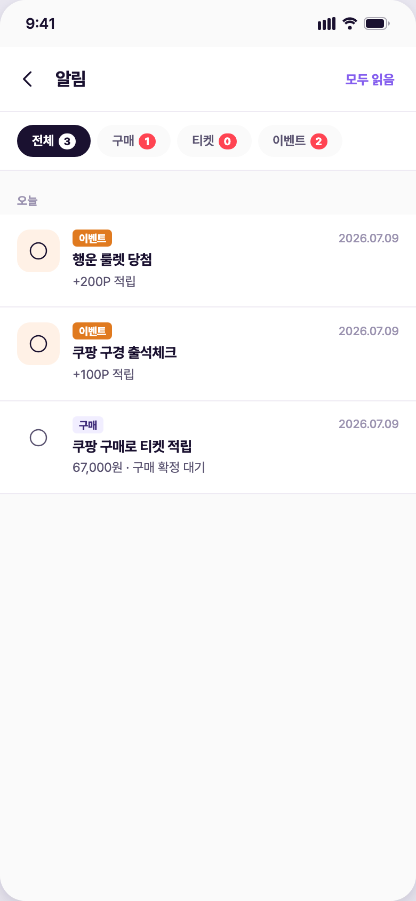
상단 필터 탭 4개가 실제 건수 뱃지와 함께 노출되고, 탭 전환 시 해당 유형만 필터링된다. 구매=포스트백, 티켓=기프티콘 교환, 이벤트=친구초대·포인트 적립(출석·룰렛 등) 유형이 매핑된다.
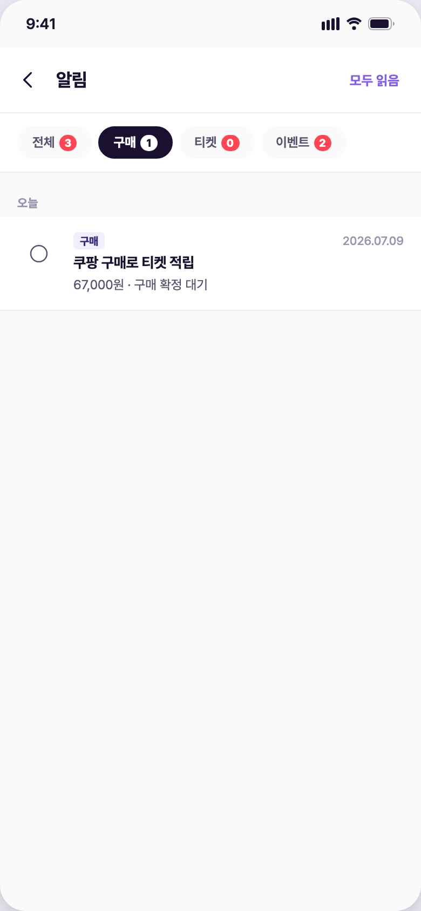
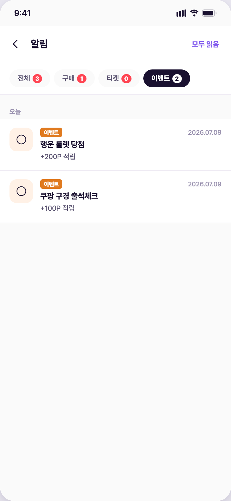
설정은 알림 / 홈 화면 / 표시 / 데이터 / 정보 5개 그룹이다. 최상단 알림 그룹에 정책 확정안대로 3종 스위치가 배치된다: 구매 알림(거래성, 기본 켜짐) · 이벤트-티켓 알림(룰렛·응모·당첨·만료 임박 D-30/D-7, 기본 켜짐) · 마케팅 정보 수신(기본 꺼짐). 각 스위치는 푸시·인앱에 공통 적용되는 1토글이다(1단계 단순화 — 채널 분리 없음).
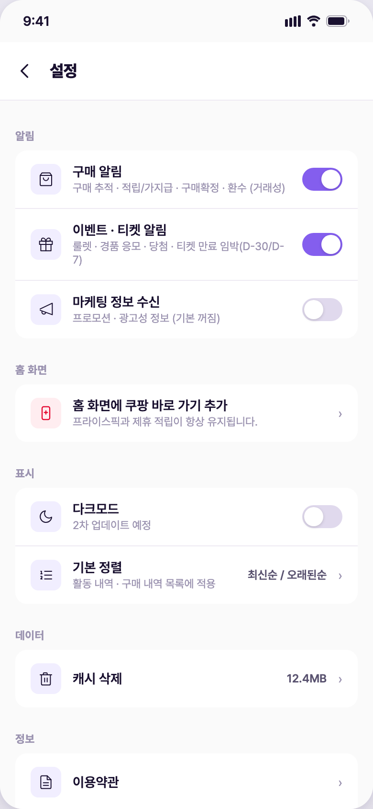
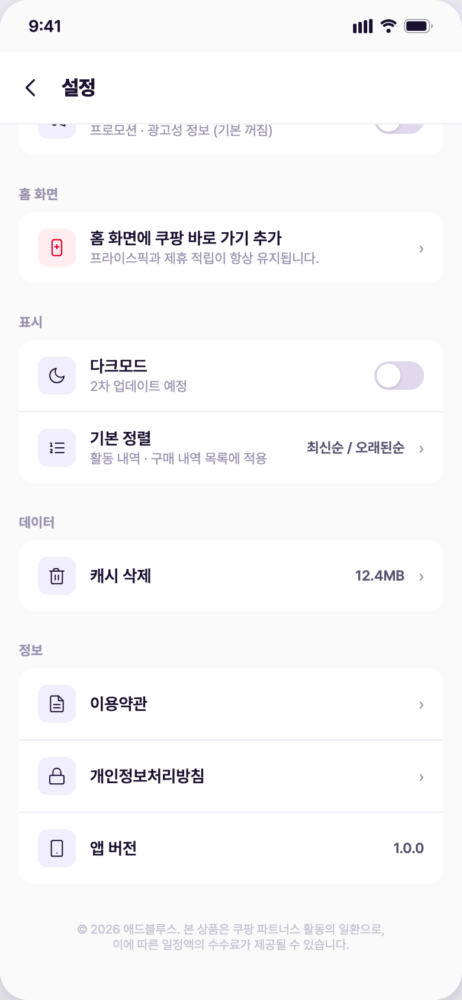
cpkOpen() — 제휴 적립 유지 바로가기 안내). 다크모드는 화면에 '2차 업데이트 예정'으로 명시. 기본 정렬·캐시 삭제는 현재 데모에서 표시만 있는 상태(하단 미결 참조).확정 정책: 스위치 상태는 서버에 저장되고 계정 기준으로 기기 간 동기화되며, 미연동 게스트는 로컬 저장 후 카카오 연동 시 승계된다. 현재 데모는 토글 UI와 변경 토스트까지만 구현되어 있고 서버 저장은 없다 — 화면 토스트에도 '(프로토타입)'으로 명시되어 있다.
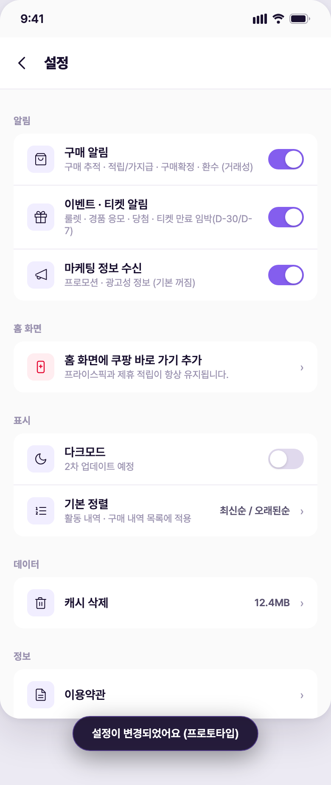
CMS '알림 관리' 메뉴 한 곳에서 FCM 발송 상한 정책(거래 상한 없음 / 기타 일 2건 / 야간 22~08시 미발송)을 상시 확인하고, 채널(앱 푸시 / 카카오 알림톡 / 동시)·대상(전체·등급별·미접속·세그먼트)·발송 시점(즉시/예약)을 지정해 알림을 작성·발송한다. 발송 완료 건은 불변 로그로 남고 '예약' 상태만 취소·수정할 수 있다. 폼 하단에 "마케팅성 알림은 수신 동의 회원에게만 발송, 서비스 필수 알림은 동의 여부와 무관하게 발송" 원칙이 명시돼 있다.
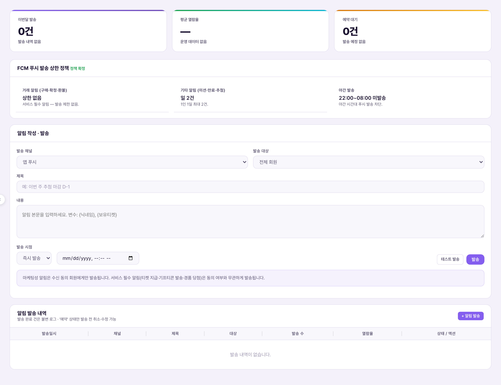
회원 목록 상단에서 마케팅 수신 동의 집계(동의 수·비율)를 확인하고, 리스트에 '마케팅 수신' 컬럼과 '전체 마케팅' 필터가 있다. 약관 관리의 '마케팅 수신 동의' 탭에서 동의 항목(앱 푸시 / 카카오 알림톡)·발송 내용·수신 거부 방법 원문을 운영한다.
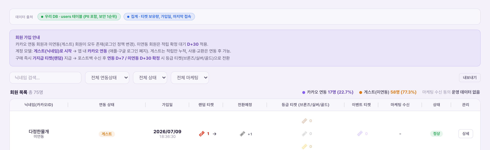
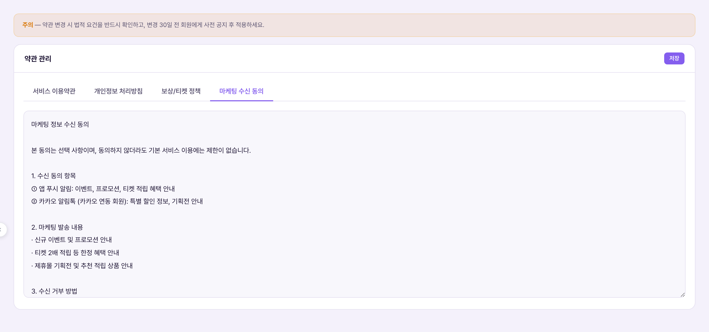
모든 수치·규칙의 원본은 마스터 정책서(policyspec.html)다. 아래는 설정·알림 관련 발췌.
| 스위치 | 커버 범위 | 기본값 |
|---|---|---|
| 구매 알림 | 거래성 — 구매 추적 · 적립/가지급 · 구매확정 · 환수 | 켜짐 |
| 이벤트 · 티켓 알림 | 룰렛 · 경품 응모 · 당첨 · 티켓 만료 임박(D-30/D-7) | 켜짐 |
| 마케팅 정보 수신 | 프로모션 · 광고성 정보 | 꺼짐 |
| 구분 | 규칙 |
|---|---|
| 거래 알림 (구매·확정·환불) | 상한 없음 — 서비스 필수, 즉시 발송 (야간에도 즉시) |
| 기타 알림 (미션·만료·추첨) | 1인 하루 2건까지 |
| 야간 | 22:00~08:00 미발송 — 모았다가 아침에 묶음 발송 |
| 우선순위·중복 억제 | 거래 > 만료 임박 > 미션 > 추첨 순 · 같은 사유는 묶어 중복 발송 억제 |
| 대상 | 만료 기준 | 알림 |
|---|---|---|
| 등급 티켓 (브론즈/실버/골드) | 적립일(확정일 아님) + 1년(365일) 자동 소멸 | D-30 · D-7 |
| 포인트 | 적립일 + 1년 만료 | D-30 · D-7 |
| 이벤트 티켓 | 발급일 + 100일 고정 (이월 폐기) | 만료 알림 명시 없음 — 확인 필요 |
| 항목 | 규칙 |
|---|---|
| 성격 | 선택 동의 — 미동의여도 기본 서비스 이용 제한 없음 |
| 동의 채널 | 앱 푸시 + 카카오 알림톡(연동 회원) |
| 이력 보존 | 약관·개인정보·마케팅 동의는 변경분을 새로 기록해 과거 동의 내역 보존 |
| 철회 후에도 | 서비스 필수 알림(티켓 지급·기프티콘 발송·경품 당첨)은 계속 발송 |
임의로 정하지 않고 표시만 한 항목. 확정되면 이 문서와 데모에 반영한다.